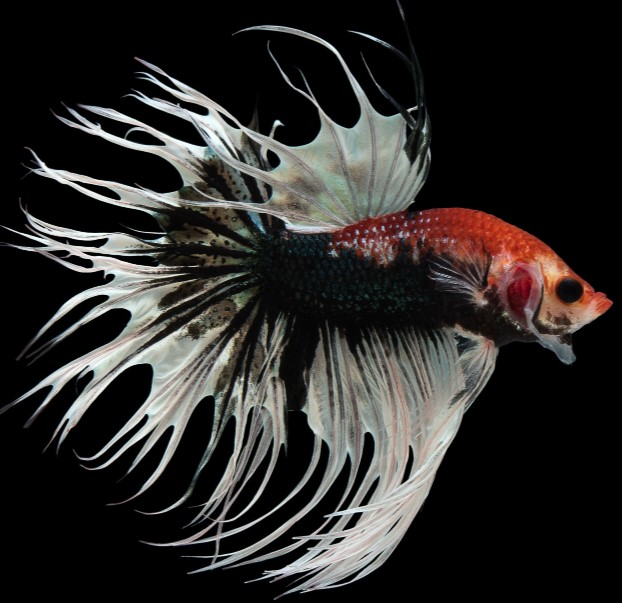

This is a Half Moon Beta. It boasts a unique half-moon-shaped tail that can open up to a 180-degree angle
This is a Delta Betta. A male Delta can reach up to 3 inches in length. The two detached fins are what set it apart from its close relative, the Half Moon Beta

This is a Crowntail Betta. It gets its name from the unique shape of its caudal fin, which mimics the points of a king's or Queen's crown. The caudal fins can grow up to three times the size of its body
This is an Alien Betta fish. They are known for their vibrant colors, full facial masks, and spread iridescence. Alien Bettas are derived from a mix of wild and domesticated bettas